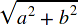

displaystylefalse, a more compact layout is used to display formulas. The main effect is that larger versions of operators are displayed, when displaystyle is set to true. See also movablelimits on {{ MathMLElement("mo") }}.#rgb, #rrggbb and HTML color names.#rgb, #rrggbb and HTML color names.| Value | Sample Rendering | Rendering in your browser |
Description |
|---|---|---|---|
longdiv (default) |
 |
long division symbol | |
actuarial |
 |
actuarial symbol | |
radical {{deprecated_inline}} |
 | square root symbol. Deprecated. Use {{MathMLElement("msqrt")}} instead. | |
box |
 |
box | |
roundedbox |
 |
rounded box | |
circle |
 |
circle | |
left |
 |
line to the left of the contents | |
right |
 |
line to the right of the contents | |
top |
 |
line above of the contents | |
bottom |
 |
line below of the contents | |
updiagonalstrike |
 |
strikeout line through contents from lower left to upper right | |
downdiagonalstrike |
 |
strikeout line through contents from upper left to lower right | |
verticalstrike |
 |
vertical strikeout line through contents | |
horizontalstrike |
 |
horizontal strikeout line through contents | |
madruwb |
 |
Arabic factorial symbol | |
updiagonalarrow |
 |
diagonal arrow | |
phasorangle |
 |
phasor angle |